Section 3.1 — Estimators
Contents
Section 3.1 — Estimators#
This notebook contains the code examples from Section 3.1 Estimators of the No Bullshit Guide to Statistics.
We’ll begin our study of inferential statistics by introducing estimators, which are the math tools used for computing confidence intervals and running hypothesis tests.
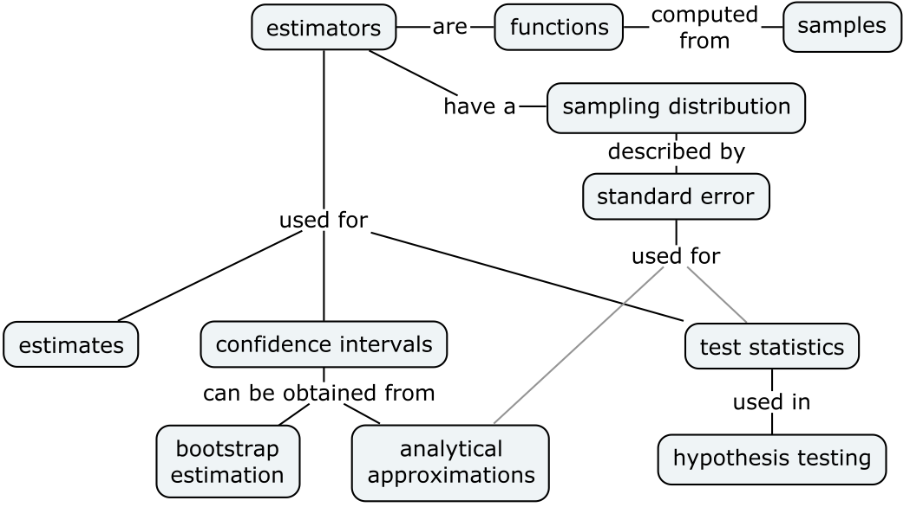
Notebook setup#
# load Python modules
import os
import numpy as np
import pandas as pd
import matplotlib.pyplot as plt
import seaborn as sns
# Plot helper functions
from plot_helpers import plot_pdf
from plot_helpers import savefigure
# Figures setup
plt.clf() # needed otherwise `sns.set_theme` doesn't work
from plot_helpers import RCPARAMS
# RCPARAMS.update({'figure.figsize': (10, 3)}) # good for screen
RCPARAMS.update({'figure.figsize': (5, 1.6)}) # good for print
sns.set_theme(
context="paper",
style="whitegrid",
palette="colorblind",
rc=RCPARAMS,
)
# Useful colors
snspal = sns.color_palette()
blue, orange, purple = snspal[0], snspal[1], snspal[4]
# High-resolution please
%config InlineBackend.figure_format = 'retina'
# Where to store figures
DESTDIR = "figures/stats/estimators"
<Figure size 640x480 with 0 Axes>
# set random seed for repeatability
np.random.seed(42)
#######################################################
\(\def\stderr#1{\mathbf{se}_{#1}}\) \(\def\stderrhat#1{\hat{\mathbf{se}}_{#1}}\) \(\newcommand{\Mean}{\textbf{Mean}}\) \(\newcommand{\Var}{\textbf{Var}}\) \(\newcommand{\Std}{\textbf{Std}}\) \(\newcommand{\Freq}{\textbf{Freq}}\) \(\newcommand{\RelFreq}{\textbf{RelFreq}}\) \(\newcommand{\DMeans}{\textbf{DMeans}}\) \(\newcommand{\Prop}{\textbf{Prop}}\) \(\newcommand{\DProps}{\textbf{DProps}}\)
(this cell contains the macro definitions \(\stderr{\theta}\), \(\stderrhat{}\), \(\Mean\), …)
Applications of sampling distributions#
Parameter estimates
Confidence intervals (next section)
Test statistics (remainder of the sections in this chapter)
TODO: import one-liner explanation for each of these
Statistical inference context#
DATA:
population
sample
statistic
PROB:
probability model
model family
parameters
Statistical inference is the use the values of the statistics obtained from the sample \(\mathbf{x} = (x_1, x_2, \ldots, x_n)\) to estimate the population parameters \(\theta\). For example, the sample mean \(\overline{\mathbf{x}}=\Mean(\mathbf{x})\) is an estimate of the population mean \(\mu\), and the sample variance \(s_{\mathbf{x}}^2=\Var(\mathbf{x})\) is an estimate of the population variance \(\sigma^2\).
Estimators#
We use the term “estimator” to describe a function \(g\) that takes samples as inputs and produces parameter estimates as outputs. Written mathematically, and estimator is a function of the form:
\[ g \colon \underbrace{\mathcal{X}\times \mathcal{X}\times \cdots \times \mathcal{X}}_{n \textrm{ copies}} \quad \to \quad \mathbb{R}, \]where \(n\) is the samples size and \(\mathcal{X}\) denotes the possible values of the random variable \(X\).
We give different names to estimates, depending on the use case:
statistic = a quantity computed from a sample (e.g. descriptive statistics)
parameter estimates = statistics that estimate population parameters
test statistic = an estimate used as part of hypothesis testing procedure
The value of the estimator \(\hat{\theta} = g(\mathbf{x})\) is computed from a particular sample \(\mathbf{x} = (x_1, x_2, \ldots, x_n)\).
The sampling distribution of the estimator \(g\) is the distribution of \(\hat{\Theta} = g(\mathbf{X})\), where \(\mathbf{X} = (X_1, X_2, \ldots, X_n)\) is a random sample.
Let’s start with some estimators you’re already familiar with (discussed in descriptive statistics):
Sample mean estimator#
estimator: \(\overline{\mathbf{x}} = \Mean(\mathbf{x}) = \frac{1}{n}\sum_{i=1}^n x_i\)
gives an estimate for the population mean \(\mu\)
def mean(sample):
return sum(sample) / len(sample)
# ALT. use .mean() method on a Pandas series
# ALT. use np.mean(sample)
Sample variance and standard deviation#
estimator: \(s_{\mathbf{x}}^2 = \Var(\mathbf{x}) = \frac{1}{n-1}\sum_{i=1}^n (x_i-\overline{\mathbf{x}})^2\)
gives an estimate for the population variance \(\sigma^2\)
note the denominator is \((n-1)\) and not \(n\)
def var(sample):
xbar = mean(sample)
sumsqdevs = sum([(xi-xbar)**2 for xi in sample])
return sumsqdevs / (len(sample)-1)
# ALT. use .var() method on a Pandas series
# ALT. use np.var(sample, ddof=1)
The standard deviation \(s_{\mathbf{x}}^2\) is the square root of the sample variance:
We can now define a Python function std for computing the standard deviation by taking the square root of the variance:
def std(sample):
s2 = var(sample)
return np.sqrt(s2)
# ALT. use .std() method on a Pandas series
# ALT. use np.std(sample, ddof=1)
Example 1: apple weight mean and variance#
apples = pd.read_csv("../datasets/apples.csv")
asample = apples["weight"]
asample.count()
30
type(asample)
pandas.core.series.Series
# asample
type(asample.values)
numpy.ndarray
asample.values
array([205., 182., 192., 189., 217., 192., 210., 240., 225., 191., 193.,
209., 167., 183., 210., 198., 239., 188., 179., 182., 200., 197.,
245., 192., 201., 218., 198., 211., 208., 217.])
Next let’s calculate the mean of the sample:
sns.kdeplot(asample)
<Axes: xlabel='weight', ylabel='Density'>
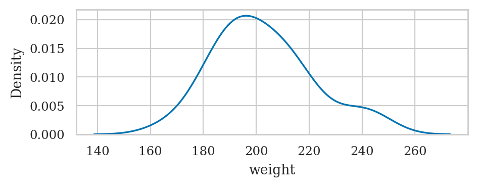
mean(asample)
202.6
Let’s also calculate the variance and the standard deviation of the sample of the apple weights:
var(asample), std(asample)
(345.9724137931035, 18.60033370112223)
# ALT. call `.describe()` to get five-point summary
asample.describe()
count 30.000000
mean 202.600000
std 18.600334
min 167.000000
25% 191.250000
50% 199.000000
75% 210.750000
max 245.000000
Name: weight, dtype: float64
Example 2: kombucha volume mean and variance#
kombucha = pd.read_csv("../datasets/kombucha.csv")
# kombucha
batch01 = kombucha[kombucha["batch"]==1]
ksample01 = batch01["volume"]
ksample01.count()
40
ksample01.values
array([1016.24, 993.88, 994.72, 989.27, 1008.65, 976.98, 1017.45,
992.39, 1003.19, 997.51, 1014.62, 979.4 , 996.78, 996.16,
1011.34, 989. , 998.28, 991.22, 1000.42, 1005.83, 988.99,
1011.45, 1009.02, 1005.02, 1009.01, 993.16, 998.77, 990.64,
997.32, 1005.3 , 993.08, 996.03, 993.13, 991.55, 993.29,
999.87, 988.83, 1002.34, 1016.6 , 1007.42])
sns.kdeplot(ksample01)
<Axes: xlabel='volume', ylabel='Density'>
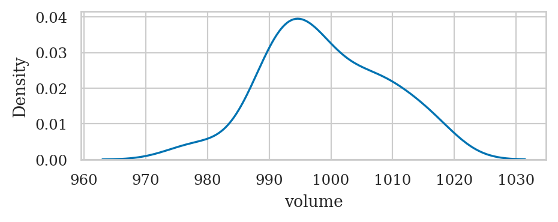
mean(ksample01)
999.10375
var(ksample01), std(ksample01)
(95.43654198717958, 9.769162808919686)
Difference between sample means estimator#
We’ll now discuss an estimators that is specific for the comparison of the two groups.
estimator: \(\hat{d} = \DMeans(\mathbf{x}_A, \mathbf{x}_B) = \Mean(\mathbf{x}_A) - \Mean(\mathbf{x}_B) = \overline{\mathbf{x}}_A - \overline{\mathbf{x}}_B\)
gives an estimate for the difference between population means: \(\Delta = \mu_A - \mu_B\)
def dmeans(xsample, ysample):
"""
Compute the difference between group means of the samples.
"""
dhat = mean(xsample) - mean(ysample)
return dhat
Example 3: comparison of electricity prices#
Let’s compute the difference between means of the East and West electricity prices.
eprices = pd.read_csv("../datasets/eprices.csv")
# print(str(eprices))
epricesW = eprices[eprices["end"]=="West"]
pricesW = epricesW["price"]
pricesW.values
array([11.8, 10. , 11. , 8.6, 8.3, 9.4, 8. , 6.8, 8.5])
mean(pricesW), var(pricesW)
(9.155555555555555, 2.440277777777778)
epricesE = eprices[eprices["end"]=="East"]
pricesE = epricesE["price"]
pricesE.values
array([7.7, 5.9, 7. , 4.8, 6.3, 6.3, 5.5, 5.4, 6.5])
mean(pricesE), var(pricesE)
(6.155555555555555, 0.7702777777777777)
Let’s calculate the mean of the prices in the East and the West:
mean(pricesW), mean(pricesE)
(9.155555555555555, 6.155555555555555)
To calculate the difference between means,
we can simply subtract these two numbers \(\hat{d} = \overline{\mathbf{x}}_W - \overline{\mathbf{x}}_E\),
or simply call the function dmeans
which computes the estimate \(\hat{d} = \textbf{DMeans}(\tt{pricesW}, \tt{pricesE})\).
dmeans(pricesW, pricesE)
3.0
According to this estimate, the average price Rob can expect in the East end is three cents cheaper, on average, as compared to the average electricity price in the West.
Sampling distributions#
TODO import definitions
Let’s look at the same estimators that we described in the previous section, but this time applied to random samples of size \(n\):
Sample mean: \(\overline{\mathbf{X}} = \Mean(\mathbf{X}) = \tfrac{1}{n}\sum_{i=1}^n X_i\)
Sample variance: \(S_{\mathbf{X}}^2 = \Var(\mathbf{X}) = \tfrac{1}{n-1}\sum_{i=1}^n \left(X_i - \overline{\mathbf{X}} \right)^2\)
Sample standard deviation: \(S_{\mathbf{X}} = \sqrt{\Var(\mathbf{X})} = \sqrt{\tfrac{1}{n-1}\sum_{i=1}^n \left(X_i - \overline{\mathbf{X}} \right)^2}\)
Difference between sample means: \(\hat{D} = \DMeans(\mathbf{X}, \mathbf{Y}) = \overline{\mathbf{X}} - \overline{\mathbf{Y}}\)
Note these formulas is identical to the formulas we saw earlier. The only difference is that we’re calculating the functions \(g\), \(h\), and \(d\) based on a random sample \(\mathbf{X} = (X_1, X_2, \ldots, X_n)\), instead of particular sample \(\mathbf{x} = (x_1, x_2, \ldots, x_n)\).
Example Z#
from plot_helpers import gen_samples
from plot_helpers import plot_samples
from stats_helpers import gen_sampling_dist
from plot_helpers import plot_sampling_dist
Let’s generate \(N=10\) samples \(\mathbf{z}_1, \mathbf{z}_2, \mathbf{z}_3, \ldots, \mathbf{z}_{10}\), and compute the mean, the variance, and the standard deviation in each sample.
from scipy.stats import norm
rvZ = norm(0, 1)
zsamples_df = gen_samples(rvZ, n=20, N=10)
with plt.rc_context({"figure.figsize":(7, 2)}):
ax = plot_samples(zsamples_df, xlims=[-2.5,2.5], showstd=True)
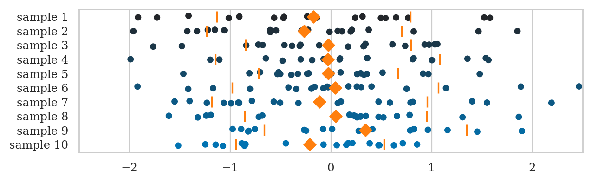
filename = os.path.join(DESTDIR, "samples_from_rvZ_n20_w_means_n_stds.pdf")
savefigure(ax, filename)
Saved figure to figures/stats/estimators/samples_from_rvZ_n20_w_means_n_stds.pdf
Saved figure to figures/stats/estimators/samples_from_rvZ_n20_w_means_n_stds.png
Now imagine repeating this process for \(N=1000\) samples \(\mathbf{z}_1, \mathbf{z}_2, \mathbf{z}_3, \ldots, \mathbf{z}_{1000}\).
We can obtain an approximation of the sampling distribution of the mean, by plotting a histogram of the means we computed from the \(1000\) random samples:
where \(\overline{\mathbf{z}}_i\) denotes the sample mean computed from the data in the \(i\)th sample: \(\overline{\mathbf{z}}_i = \Mean(\mathbf{z}_i)\).
fig, ax = plt.subplots()
np.random.seed(43)
zbars = gen_sampling_dist(rvZ, statfunc=mean, n=20, N=1000)
plot_sampling_dist(zbars, ax=ax, binwidth=0.06, scatter="mean", filename=None)
ax.set_xlim([-2.5,2.5])
ax.set_xlabel("$\overline{\mathbf{z}}$")
ax.set_ylabel("$f_{\overline{\mathbf{Z}}}$")
Text(0, 0.5, '$f_{\\overline{\\mathbf{Z}}}$')
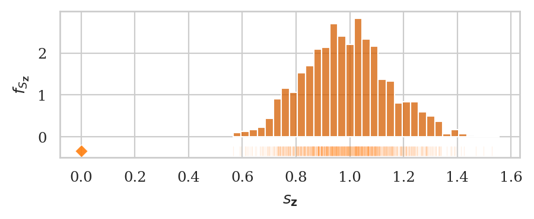
filename = os.path.join(DESTDIR, "sampling_dist_mean_hist_and_strip_rvZ_n20_N1000.pdf")
savefigure(ax, filename)
Saved figure to figures/stats/estimators/sampling_dist_mean_hist_and_strip_rvZ_n20_N1000.pdf
Saved figure to figures/stats/estimators/sampling_dist_mean_hist_and_strip_rvZ_n20_N1000.png
We can obtain an approximation of the sampling distribution of the sample standard deviation, by plotting a histogram of the standard deviations we computed from the \(1000\) random samples:
where \(s_{\mathbf{z}_i}\) denotes the standard deviation computed from the \(i\)th sample: \(s_{\mathbf{z}_i} = \Mean(\mathbf{z}_i) = \sqrt{ \Var(\mathbf{z}_i) }\).
fig, ax = plt.subplots()
np.random.seed(44)
zstds = gen_sampling_dist(rvZ, statfunc=std, n=20, N=1000)
plot_sampling_dist(zstds, ax=ax, binwidth=0.03, scatter="std", filename=None)
ax.set_xlabel("$s_{\mathbf{z}}$")
ax.set_ylabel("$f_{S_{\mathbf{Z}}}$")
Text(0, 0.5, '$f_{S_{\\mathbf{Z}}}$')
filename = os.path.join(DESTDIR, "sampling_dist_std_hist_and_strip_rvZ_n20_N1000.pdf")
savefigure(ax, filename)
Saved figure to figures/stats/estimators/sampling_dist_std_hist_and_strip_rvZ_n20_N1000.pdf
Saved figure to figures/stats/estimators/sampling_dist_std_hist_and_strip_rvZ_n20_N1000.png
Analytical approach to sampling distributions#
Random sample…
Computational approach to sampling distributions#
def gen_sampling_dist(rv, statfunc, n, N=10000):
stats = []
for i in range(0, N):
sample = rv.rvs(n)
stat = statfunc(sample)
stats.append(stat)
return stats
Example 4: sampling distributions of the kombucha volume#
The probability distribution of the kombucha volume is know to be \(K \sim \mathcal{N}(\mu_K=1000, \sigma_K=10)\).
This is an usual case where we know the population parameters, but we’ll investigate because it allows us to learn more about sampling distributions.
from scipy.stats import norm
muK = 1000
sigmaK = 10
rvK = norm(muK, sigmaK)
ax = plot_pdf(rvK, xlims=[960,1040], rv_name="K")
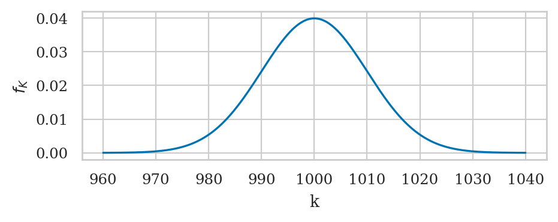
# TODO: add figure in text
filename = os.path.join(DESTDIR, "plot_pdf_normal_mu1000_sigma10.pdf")
savefigure(ax, filename)
Saved figure to figures/stats/estimators/plot_pdf_normal_mu1000_sigma10.pdf
Saved figure to figures/stats/estimators/plot_pdf_normal_mu1000_sigma10.png
rvK.cdf(1010) - rvK.cdf(990)
0.6826894921370859
rvK.cdf(1020) - rvK.cdf(980)
0.9544997361036416
Sampling distribution of the mean#
np.random.seed(43)
kbars20 = gen_sampling_dist(rvK, statfunc=mean, n=20)
ax = sns.histplot(kbars20, stat="density", bins=60, color=orange)
ax.set_xlim([990,1010])
ax.set_ylabel("$f_{\overline{\mathbf{K}}}$")
_ = ax.set_xlabel("$\overline{\mathbf{k}}$")
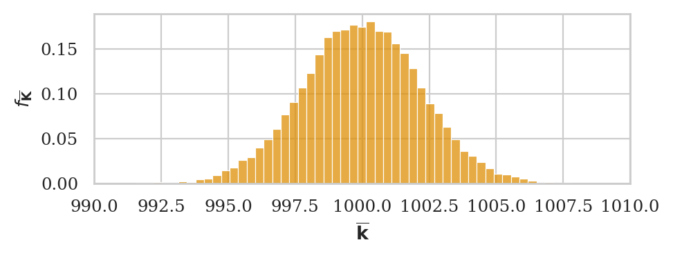
filename = os.path.join(DESTDIR, "sampling_dist_mean_rvK_n20.pdf")
savefigure(ax, filename)
Saved figure to figures/stats/estimators/sampling_dist_mean_rvK_n20.pdf
Saved figure to figures/stats/estimators/sampling_dist_mean_rvK_n20.png
Let’s calculate the variance
# observed standard deviation
np.std(kbars20)
2.2080598530804387
# CLT prediction
sigmaK / np.sqrt(20)
2.23606797749979
# FIGURES ONLY
filename = os.path.join(DESTDIR, "sampling_dist_mean_rvK_and_CLT_n20.pdf")
# kbars
np.random.seed(43)
kbars20tmp = gen_sampling_dist(rvK, statfunc=mean, n=20)
# CLT approx
rvKbar20CLT = norm(muK, sigmaK / np.sqrt(20))
# plot hist and pdf superimposed
ax = sns.histplot(kbars20tmp, stat="density", bins=60, color=orange)
plot_pdf(rvKbar20CLT, ax=ax, xlims=[990,1010], color=purple)
ax.set_ylabel("$f_{\overline{\mathbf{K}}}$")
_ = ax.set_xlabel("$\overline{\mathbf{k}}$")
savefigure(ax, filename)
Saved figure to figures/stats/estimators/sampling_dist_mean_rvK_and_CLT_n20.pdf
Saved figure to figures/stats/estimators/sampling_dist_mean_rvK_and_CLT_n20.png
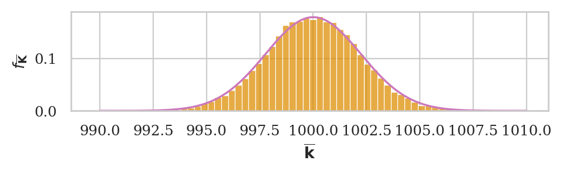
Sampling distribution of the variance#
np.random.seed(44)
kvars20 = gen_sampling_dist(rvK, statfunc=var, n=20)
ax = sns.histplot(kvars20, stat="density", bins=100, color=orange)
ax.set_ylabel("$f_{S_{\mathbf{K}}}$")
_ = ax.set_xlabel("$s^2_{\mathbf{k}}$")
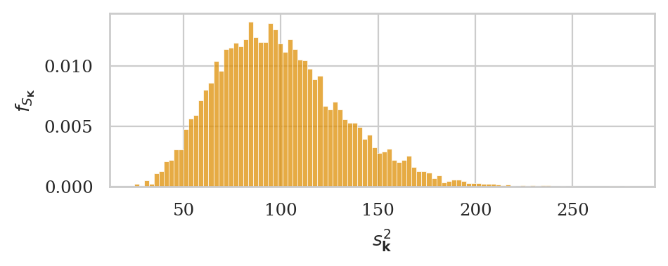
filename = os.path.join(DESTDIR, "sampling_dist_var_rvK_n20.pdf")
savefigure(ax, filename)
Saved figure to figures/stats/estimators/sampling_dist_var_rvK_n20.pdf
Saved figure to figures/stats/estimators/sampling_dist_var_rvK_n20.png
# USED BELOW
# # observed expected
# np.mean(kvars), sigmaK**2
Estimator properties#
bias
variance The square root of the variance of an estimator is called the standard error.
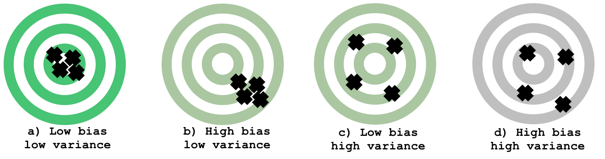
The mean estimator is unbiased
# observed, population mean
np.mean(kbars20), muK
(999.9759718368696, 1000)
The sample variance estimator is unbiased too
# observed population var
np.mean(kvars20), sigmaK**2
(99.39922540353122, 100)
Approximating sampling distribution#
Let’s look at a particular sample to use in examples.
kombucha = pd.read_csv("../datasets/kombucha.csv")
batch02 = kombucha[kombucha["batch"]==2]
ksample02 = batch02["volume"]
ksample02.count()
20
ksample02.values
array([ 995.83, 999.44, 978.64, 1016.4 , 982.07, 991.58, 1005.03,
987.55, 989.42, 990.91, 1005.51, 1022.92, 1000.42, 988.82,
1005.39, 994.04, 999.81, 1011.75, 992.52, 1000.09])
ax = plot_pdf(rvK, xlims=[960,1040])
sns.histplot(ksample02, ax=ax, stat="density", bins=40)
<Axes: xlabel='x', ylabel='$f_{X}$'>
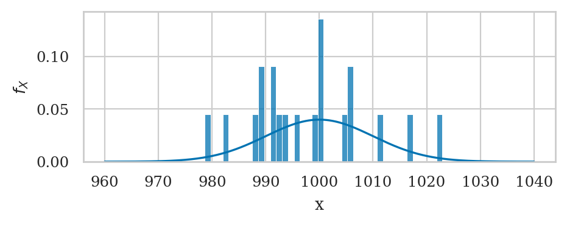
filename = os.path.join(DESTDIR, "pdf_rvK_and_hist_ksample02_n20.pdf")
savefigure(ax, filename)
Saved figure to figures/stats/estimators/pdf_rvK_and_hist_ksample02_n20.pdf
Saved figure to figures/stats/estimators/pdf_rvK_and_hist_ksample02_n20.png
mean(ksample02)
997.9069999999999
std(ksample02)
11.149780314097285
Bootstrap estimation#
Recall the sample ksample02 that comes from Batch 02 of the kombucha bottling plant.
ksample02.values
array([ 995.83, 999.44, 978.64, 1016.4 , 982.07, 991.58, 1005.03,
987.55, 989.42, 990.91, 1005.51, 1022.92, 1000.42, 988.82,
1005.39, 994.04, 999.81, 1011.75, 992.52, 1000.09])
# obsmean = mean(ksample02)
# obsmean
# obsvar = var(ksample02)
# obsvar
#######################################################
def bootstrap_stat(sample, statfunc, B=5000):
"""
Compute the sampling distribiton of `statfunc`
from `B` bootstrap samples generated from `sample`.
"""
n = len(sample)
bstats = []
for i in range(0, B):
bsample = np.random.choice(sample, n, replace=True)
bstat = statfunc(bsample)
bstats.append(bstat)
return bstats
Recall the sample ksample02 that comes from Batch 02 of the kombucha bottling plant.
Let’s use bootstrap_stat to approximate…
np.random.seed(61)
kbars_boot = bootstrap_stat(ksample02, statfunc=mean)
ax = sns.histplot(kbars_boot)
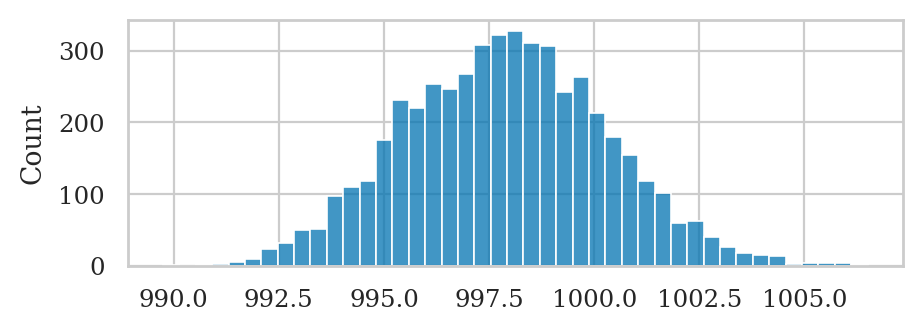
filename = os.path.join(DESTDIR, "kbars_boot_from_ksample02.pdf")
savefigure(ax, filename)
Saved figure to figures/stats/estimators/kbars_boot_from_ksample02.pdf
Saved figure to figures/stats/estimators/kbars_boot_from_ksample02.png
Analytical approximation formulas#
We can use probability theory formulas to come up with approximations for certain sampling distributions.
Indeed many of the probability distributions we learned about in the probability chapter are used to describe sampling distributions of various estimators:
\(Z\): normally distributed
Student’s \(t\)-distribution: sample mean from a normally distributed population with unknown variance
Chi-square distribution: variance of samples from a normal population
Fisher–Snedecor \(F\)-distribution: ratios of variances (only discussed later in the book)
The best example of the analytical approximation formula is the central limit theorem.
Sampling distribution of the mean#
The central limit theorem tells us everything we need to know about the sampling distribution of the sample mean estimator \(\Mean\), which corresponds to the random variable \(\overline{\mathbf{X}} = \Mean(\mathbf{X})\).
The central limit theorem states that the sampling distribution of the mean converges to a normal distribution as \(n\) goes to infinity:
Note the central limit theorem gives a sampling distribution of the sample mean computed from samples taken from any population \(X \sim \mathcal{M}(\theta)\).
Verification of the CLT#
The true sampling distribution of the sample mean generated using simulation from thousands of samples of size \(n=7\).
np.random.seed(48)
kbars7 = gen_sampling_dist(rvK, statfunc=mean, n=7)
ax = sns.histplot(kbars7, stat="density", bins=100, color=orange)
_ = ax.set_xlabel("$\overline{\mathbf{k}}$")

Let’s now superimpose a lineplot of the analytical approximation formula we obtain from the central limit theorem.
# mean equal to the population mean
muKbar = muK
# standard error (according to CLT)
seKbar = rvK.std() / np.sqrt(7)
# sampling distribution of the mean according to CLT
rvKbarCLT = norm(muKbar, seKbar)
# plot hist and pdf superimposed
ax = sns.histplot(kbars7, stat="density", bins=100, color=orange)
plot_pdf(rvKbarCLT, ax=ax, xlims=[985,1015], color=purple)
_ = ax.set_xlabel("$\overline{\mathbf{k}}$")
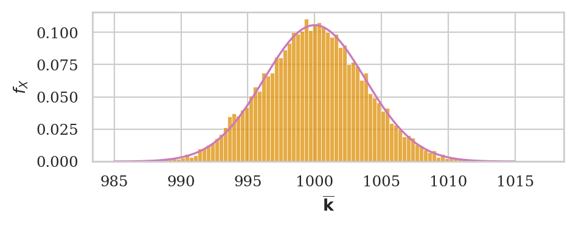
filename = os.path.join(DESTDIR, "sampling_dist_mean_rvK_simulation_and_CLT_n7.pdf")
savefigure(ax, filename)
Saved figure to figures/stats/estimators/sampling_dist_mean_rvK_simulation_and_CLT_n7.pdf
Saved figure to figures/stats/estimators/sampling_dist_mean_rvK_simulation_and_CLT_n7.png
Analysis for sample of size \(n=7\)#
True sampling distribution of the sample mean#
We start by running a simulation to obtain the true sampling distribution of the sample mean for samples of size \(n=7\) from the population \(N \sim \mathcal{N}(1000,100)\).
# np.random.seed(48)
# kbars7 = gen_sampling_dist(rvK, statfunc=mean, n=7, N=50000)
ax = sns.histplot(kbars7, stat="density", bins=100, color=orange)
_ = ax.set_xlabel("$\overline{\mathbf{k}}$")
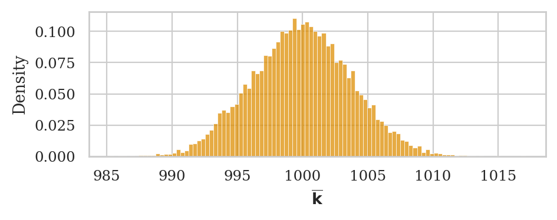
A particular sample of size \(n=7\)#
Next we generate a particular sample of size \(n=7\), which is analogous to the operation of a statistical analysis in the real world, when we don’t know the variance of the distribution.
kombucha = pd.read_csv("../datasets/kombucha.csv")
batch03 = kombucha[kombucha["batch"]==3]
ksample03 = batch03["volume"]
# ksample03
The sample standard deviation computed from ksample03 is
std(ksample03)
8.519494731273129
Which is pretty close to the true population standard deviation
sigmaK \(= \sigma_K = 10\).
# standard error estimated from `ksample03`
sehat03 = std(ksample03) / np.sqrt(7)
sehat03
3.220066336410536
Which is pretty close to the true standard error.
se = sigmaK / np.sqrt(7)
se
3.779644730092272
Normal approximation to the sampling distribution#
We now obtain the best normal approximation based on the estimated standard error sehat
that we computed from the data in ksample03.
rvNKbar = norm(muK, sehat03)
ax = sns.histplot(kbars7, stat="density", bins=100, color=orange)
plot_pdf(rvNKbar, ax=ax, xlims=[985,1015], color="red")
_ = ax.set_xlabel("$\overline{\mathbf{k}}$")
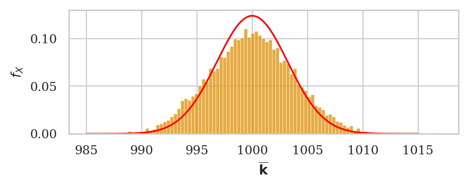
filename = os.path.join(DESTDIR, "sampling_dist_mean_rvK_and_normal_approx_n7.pdf")
savefigure(ax, filename)
Saved figure to figures/stats/estimators/sampling_dist_mean_rvK_and_normal_approx_n7.pdf
Saved figure to figures/stats/estimators/sampling_dist_mean_rvK_and_normal_approx_n7.png
A better reference distribution#
A better reference distribution: Student’s t-distribution (used whenever working with normally needed in context where using \(s\) as plug-in estimate for σ)
Obtain Student’s \(t\)-distribution based on the estimated standard error sehat
that we computed from the data in ksample03.
from scipy.stats import t as tdist
# standard error estimated from `ksample03`
sehat03 = std(ksample03) / np.sqrt(7)
df = 7 - 1 # (n-1) degrees of freedom
rvTKbar = tdist(df, loc=muK, scale=sehat03)
ax = sns.histplot(kbars7, stat="density", bins=100, color=orange, label="simulation")
plot_pdf(rvTKbar, ax=ax, xlims=[985,1015], color=purple, label="Student's t approx.")
_ = ax.set_xlabel("$\overline{\mathbf{k}}$")

filename = os.path.join(DESTDIR, "sampling_dist_mean_rvK_and_T_approx_n7.pdf")
savefigure(ax, filename)
Saved figure to figures/stats/estimators/sampling_dist_mean_rvK_and_T_approx_n7.pdf
Saved figure to figures/stats/estimators/sampling_dist_mean_rvK_and_T_approx_n7.png
Bootstrapped sampling distribution of the sample mean#
np.random.seed(48)
# ground truth (in orange)
ax = sns.histplot(kbars7, stat="density", bins=100,
color=orange, alpha=0.3, label="simulation")
# bootstrap estimate (in blue)
kbars_boot03 = bootstrap_stat(ksample03, statfunc=mean)
sns.histplot(kbars_boot03, ax=ax, stat="density",
alpha=0.5, label="bootstrap estimate")
_ = ax.set_xlabel("$\overline{\mathbf{k}}$")
plt.legend()
<matplotlib.legend.Legend at 0x7fab194f6790>
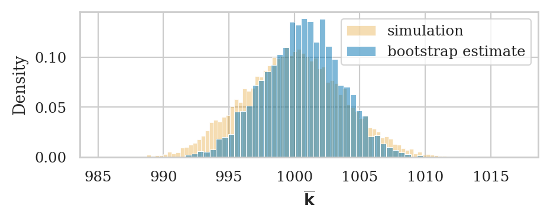
filename = os.path.join(DESTDIR, "bootstrap_dist_mean_kombucha_ksample03.pdf")
savefigure(ax, filename)
Saved figure to figures/stats/estimators/bootstrap_dist_mean_kombucha_ksample03.pdf
Saved figure to figures/stats/estimators/bootstrap_dist_mean_kombucha_ksample03.png
# TODO: explain we shifted version? --> Explanaitons
# kbars_boot03 = np.array(kbars_boot03)
# kbars_boot03_centered = kbars_boot03 - mean(ksample03) + muK
The expected value and the standard error of the sampling distribution we obtained using bootstrap estimation are:
np.mean(kbars_boot03), np.std(kbars_boot03)
(1000.5607797142856, 2.9673068567038365)
These numbers are pretty close to the true paramters, which we obtained using simulation.
np.mean(kbars7), np.std(kbars7)
(999.9232910137121, 3.821046072073826)
Sampling distribution of the variance#
When the population is normally distributed \(X \sim \mathcal{N}(\mu,\sigma)\), the sampling distribution of the sample variance \(S_{\mathbf{x}}^2\) is described by a scaled version of the chi-square distribution:
where \(n\) is the sample size and \(\chi^2_{(n-1)}\) is the chi-square distribution with \(n-1\) degrees of freedom.
Sampling distribution of the variance#
Let’s start by plotting a histogram of the sampling distribution of the variance
computed from samples of size \(n=20\) from the random variable rvK = \(K \sim \mathcal{N}(\mu_K=1000,\sigma_K=10)\).
np.random.seed(44)
kvars20 = gen_sampling_dist(rvK, statfunc=var, n=20)
ax = sns.histplot(kvars20, stat="density", bins=100, color=orange)
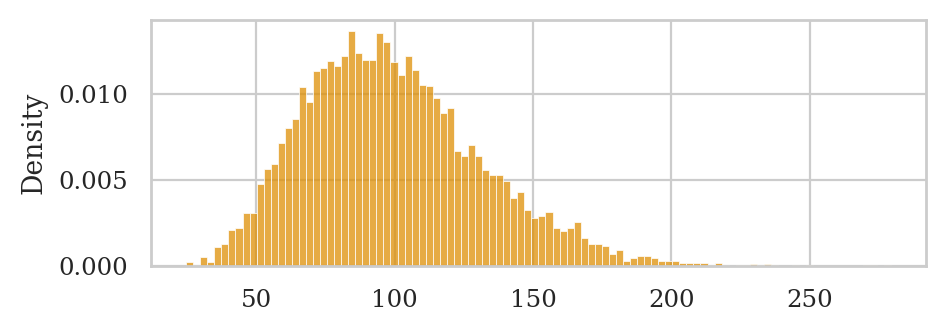
Let’s now superimpose the chi-square distribution with \(20-1=19\) degrees of freedom, with scale parameter set to \(\sigma_N^2/(n-1)\).
from scipy.stats import chi2
df = 20 - 1
scale = sigmaK**2 / (20-1)
rvS2 = chi2(df, loc=0, scale=scale)
ax = sns.histplot(kvars20, stat="density", bins=100, color=orange)
plot_pdf(rvS2, ax=ax, color=purple)
_ = ax.set_xlabel("$s^2_{\mathbf{k}}$")
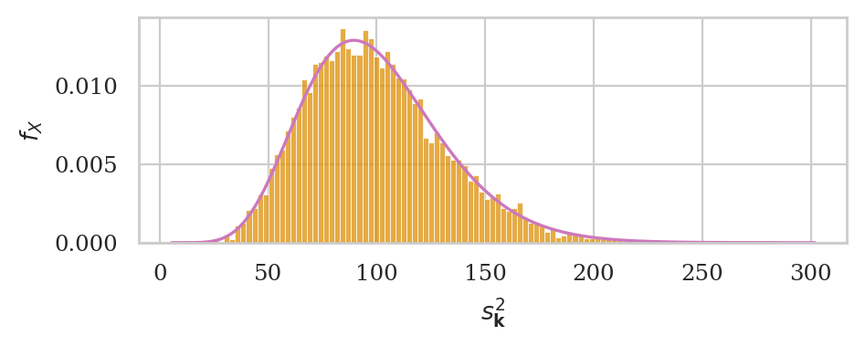
filename = os.path.join(DESTDIR, "sampling_dist_var_rvK_and_X2_approx_n20.pdf")
savefigure(ax, filename)
Saved figure to figures/stats/estimators/sampling_dist_var_rvK_and_X2_approx_n20.pdf
Saved figure to figures/stats/estimators/sampling_dist_var_rvK_and_X2_approx_n20.png
Bootstrapped sampling distribution of the sample variance#
The sample variance we find from ksample02 is an over-estimate
of the population variance:
# sample var population var
var(ksample02), sigmaK**2
(124.31760105263136, 100)
So we should expect the boostrap estimate we obtain
by resampling from ksample02 will also be an overestimate of the population.
# ground truth (in orange)
ax = sns.histplot(kvars20, stat="density", bins=100,
color=orange, alpha=0.3, label="simulation")
np.random.seed(49)
kvars_boot02 = bootstrap_stat(ksample02, statfunc=var)
# bootstrap estimate (in blue)
ax = sns.histplot(kvars_boot02, ax=ax, stat="density",
alpha=0.5, label="bootstrap estimate")
_ = ax.set_xlabel("$s^2_{\mathbf{k}}$")
plt.legend()
<matplotlib.legend.Legend at 0x7fab2f3c00a0>
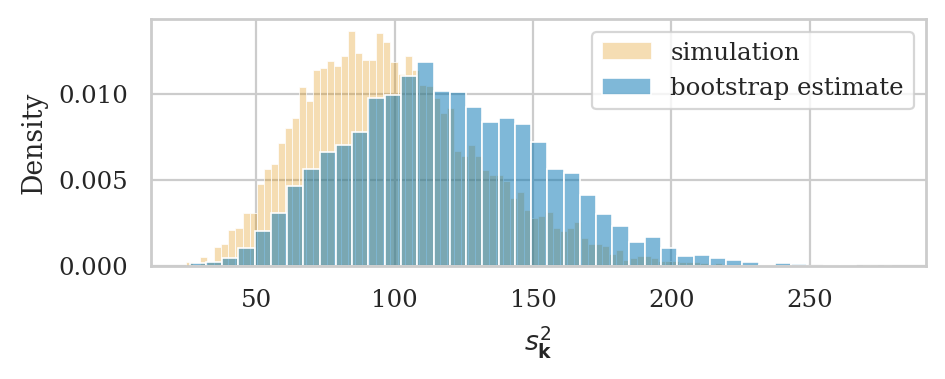
filename = os.path.join(DESTDIR, "bootstrap_dist_var_kombucha_ksample02.pdf")
savefigure(ax, filename)
Saved figure to figures/stats/estimators/bootstrap_dist_var_kombucha_ksample02.pdf
Saved figure to figures/stats/estimators/bootstrap_dist_var_kombucha_ksample02.png
# # ALT: shifted
# # ground truth (in orange)
# ax = sns.histplot(kvars20, stat="density", bins=100,
# color=orange, alpha=0.3, label="simulation")
# np.random.seed(49)
# kvars20_boot = bootstrap_stat(ksample02, statfunc=var)
# kvars20_boot = np.array(kvars20_boot)
# kvars20_boot_shifted = kvars20_boot - np.mean(kvars20_boot) + sigmaK**2
# # bootstrap estimate (in blue)
# ax = sns.histplot(kvars20_boot_shifted, ax=ax, stat="density",
# alpha=0.3, label="bootstrap estimate")
# _ = ax.set_xlabel("$s^2_{\mathbf{k}}$")
# plt.legend()
The expected value and the standard error of the sampling distribution we obtained using bootstrap estimation are:
np.mean(kvars_boot02), np.std(kvars_boot02)
(118.6780201503156, 35.96396081594617)
The expected value is an underestimate of the true mean for the sampling distribution.
np.mean(kvars20)
99.39922540353122
The standard error \(\stderrhat{s_{\mathbf{k}}^2}^b=35.97\) of the sampling distribution is also an overestimate of the true standard error.
np.std(kvars20)
32.27334227853393
Difference between means estimator#
We assume the two groups are normally distributed random variables \(X\) and \(Y\):
Definitions:
\(\mathbf{x} = (x_1, x_2, \ldots, x_{n})\)=
xsample: a sample of size \(n\) from \(X\)\(\mathbf{y} = (y_1, y_2, \ldots, y_{m})\)=
ysample: a sample of size \(m\) from \(Y\).\(\overline{\mathbf{x}} = \Mean(\mathbf{x})\): the observed mean in the first group
\(\overline{\mathbf{y}} = \Mean(\mathbf{y})\): the observed mean in the second group
\(s_{\mathbf{x}}^2 = \Var(\mathbf{x})\): the sample variance from the first group
\(s_{\mathbf{y}}^2 = \Var(\mathbf{y})\): the sample variance from the second group
\(\hat{d} = \DMeans(\mathbf{x}, \mathbf{y}) = \overline{\mathbf{x}} - \overline{\mathbf{y}}\): the difference between means estimate, which is an estimate of the true different between population means \(\Delta = \mu_X - \mu_Y\).
To obtain the sampling distribution of the estimator dmeans,
we imagine the random samples \(\mathbf{X} = (X_1, X_2, \ldots, X_{n})\)
and \(\mathbf{Y} = (Y_1, Y_2, \ldots, Y_{m})\),
and compute the difference between means estimator dmeans from them:
If we knew the true population distributions for the two groups \(X\) and \(Y\),
we could obtain the sampling distribution
by repeatedly generating samples xsample and ysample from the two distributions,
and computing dmeans on the random samples.
Analytical formula for the sampling distribution#
Let’s now use probability theory to build a theoretical model for the sampling distribution of the difference-between-means estimator dmeans.
The central limit theorem tells us the sample mean within the two group are
\[ \overline{\mathbf{X}} \sim \mathcal{N}\!\left(\mu_X, \tfrac{\sigma_X}{\sqrt{n}} \right) \qquad \textrm{and} \qquad \overline{\mathbf{Y}} \sim \mathcal{N}\!\left(\mu_Y, \tfrac{\sigma_Y}{\sqrt{m}} \right). \]The rules of probability theory tells us that the difference of two normal random variables requires subtracting their means and adding their variance, so we get: $\( \hat{D} \sim \mathcal{N}\!\left( \mu_X - \mu_Y, \; \stderr{\hat{D}} \right), \)$
where the standard error of the estimator \(\hat{D}\) is:
\[ \stderr{\hat{D}} = \sqrt{ \tfrac{\sigma^2_X}{n} + \tfrac{\sigma^2_Y}{m} }. \]
Analytical approximation formula#
When using esimtated std instead of populaiton std…
Example 5: difference between electricity prices#
Probability theory predicts the sampling distribution had mean …
eprices = pd.read_csv("../datasets/eprices.csv")
pricesW = eprices[eprices["end"]=="West"]["price"]
pricesE = eprices[eprices["end"]=="East"]["price"]
# sample size and std in East
nW = pricesW.count()
stdW = pricesW.std()
# sample size and std in West
nE = pricesE.count()
stdE = pricesE.std()
seD = np.sqrt(stdW**2/nW + stdE**2/nE)
seD
0.5972674401486562
The degrees of freedom of is obtained by the following formula
Calculate the degrees of freedom parameter.
def calcdf(stdX, n, stdY, m):
vX = stdX**2 / n
vY = stdY**2 / m
df = (vX + vY)**2 / (vX**2/(n-1) + vY**2/(m-1))
return df
df = calcdf(stdW, nW, stdE, nE)
df
12.59281702723103
dhat = dmeans(pricesW, pricesE)
dhat
3.0
from scipy.stats import t as tdist
rvD = tdist(df, loc=dhat, scale=seD)
_ = plot_pdf(rvD, rv_name="D", xlims=[-6,6], color=purple)
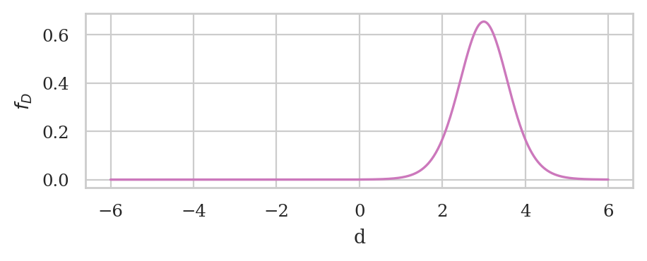
filename = os.path.join(DESTDIR, "tdist_approx_for_eprices_dmeans.pdf")
savefigure(ax, filename)
Saved figure to figures/stats/estimators/tdist_approx_for_eprices_dmeans.pdf
Saved figure to figures/stats/estimators/tdist_approx_for_eprices_dmeans.png
Bootstrapped sampling distribution of the difference between means#
# compute bootstrap estimates for mean in each group
meanW_boot = bootstrap_stat(pricesW, statfunc=mean)
meanE_boot = bootstrap_stat(pricesE, statfunc=mean)
# compute the difference between means from bootstrap samples
dmeans_boot = []
for bmeanW, bmeanE in zip(meanW_boot, meanE_boot):
d_boot = bmeanW - bmeanE
dmeans_boot.append(d_boot)
ax = sns.histplot(dmeans_boot, stat="density", bins=30)
_ = ax.set_xlim([-6,6])
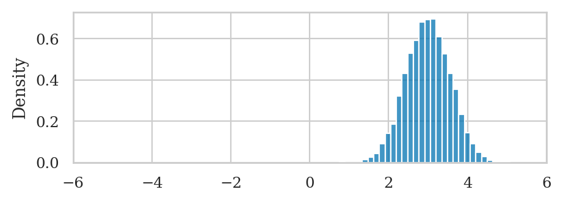
filename = os.path.join(DESTDIR, "bootstrap_dist_eprices_dmeans.pdf")
savefigure(ax, filename)
Saved figure to figures/stats/estimators/bootstrap_dist_eprices_dmeans.pdf
Saved figure to figures/stats/estimators/bootstrap_dist_eprices_dmeans.png
np.mean(dmeans_boot), np.std(dmeans_boot)
(3.004968888888889, 0.5629952099614226)
Explanations#
Biased estimator of the sample variance#
Let’s see what happens if we use the denominator \(n\) instead of \((n-1)\) for the sample variance calculation.
def s2tilde(sample):
xbar = mean(sample)
sumsqdevs = sum([(xi-xbar)**2 for xi in sample])
return sumsqdevs / len(sample)
np.random.seed(16)
s2tildes = gen_sampling_dist(rvK, statfunc=s2tilde, n=20)
ax = sns.histplot(s2tildes, stat="density", color=orange)
_ = ax.set_xlabel("$\\tilde{s}^2_{\mathbf{k}}$")
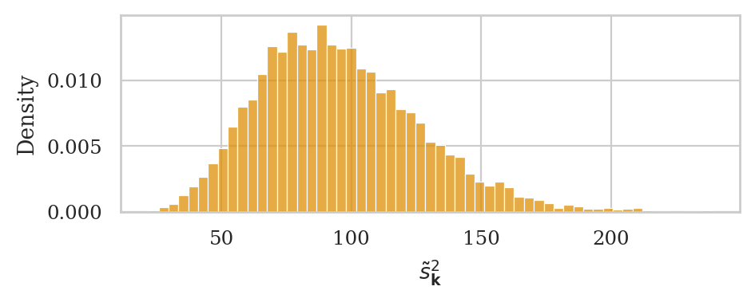
Note the expected value of the sampling distribution for this estimator does not equal the population variance, \(\mathbb{E}[\tilde{S}^2] \neq \sigma_K^2 = 100\).
np.mean(s2tildes)
95.28131350335453
We can correct the bias in this estimator by simply using the normalization factor \((n-1)\) in the formula instead of \(n\).
So if we want an unbiased estimator of the sample variance, you need use the sample variance formulas with \((n-1)\) denominator: \(\mathbb{E}[S_{\mathbf{K}}^2] \approx \sigma_K^2 = 100\).
np.mean(kvars20)
99.39922540353122
Pivotal quantities#
Rephrase analytical approximations in terms of standard reference distributions, thanks to pivot transformation
Recall the distribution for mean of kombucha volume, when we use the estimated standard deviation \(s\) is given by the \(t\)-distribution.
from scipy.stats import t as tdist
rvT = tdist(7-1) # loc=0 and scale=1 by default
rvTKbar.ppf(0.95), rvT.ppf(0.95)*sehat + muK
---------------------------------------------------------------------------
NameError Traceback (most recent call last)
Cell In[108], line 1
----> 1 rvTKbar.ppf(0.95), rvT.ppf(0.95)*sehat + muK
NameError: name 'sehat' is not defined
rvTKbar.cdf(1003), rvT.cdf( (1003-muK)/sehat )
Recall the sampling distribution of the variance…
from scipy.stats import chi2
rvX2 = chi2(20-1) # loc=0 and scale=1 by default
scale = sigmaK**2 / (20-1)
rvS2.ppf(0.95), rvX2.ppf(0.95)*scale
rvS2.cdf(150), rvX2.cdf(150/scale)
Discussion#
EDITME#
Ground truth for sampling distributions#
The sampling distribution graphs we saw above represent the true sampling distributions for the estimators \(\Mean\), \(\Var\), etc., generated from samples of size \(n=20\) from the population \(K \sim \mathcal{N}(\mu_K=1000, \sigma_K=10)\).
We can therefore use them as the “ground truth” for the approximations techniques we’ll learn about in the next two subsections.
# np.random.seed(16)
# kvars20 = gen_sampling_dist(rvK, statfunc=var, n=20)
# ax = sns.histplot(kvars20, stat="density", color=orange)
# _ = ax.set_xlabel("$s^2_{\mathbf{k}}$")